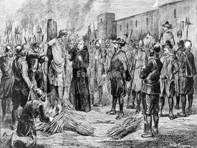
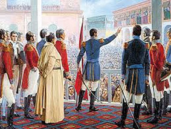
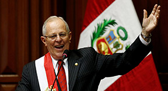

La cultura Inca és va enfrontar amb l'hispana amb l’arribada dels conquistadors espanyols en el XVI. L’any 1532, las hostes de Francisco Pizarro van capturar a l’Inca Atahualpa en Cajamarca i aquest fet pa marcar el declivi de l’imperi Inca.
L’any 1581, Perú va ser declarat un país independent per don José de San Martín, l’any 1824 Simón Bolívar va culminar el procés llibertari amb les guerres de d’independència. Amb la republicà en formació, Perú va tenir que enfrontar grans crisis econòmiques i cabdillisme militars que van fer difícil la conciliació entre Indis i Mestissos.
L’any 1879 Perú va tenir una guerra que va perdre amb Xile. En mig de la fallida van vindre polítiques militars però al final van retornar a governs civils. També en aquesta època va començar un apogeu de la explotació del cautxú en la selva i es va obrir una bretxa entre un elit principalment de la capital , amb la resta de la població en l’interior del país, que va viure principalment de la agricultura.
En la dècada de 1970, Perú va estar governada per una dictadura liderada pel militar Juan Velasco. La administració militar va estatitzà petroli, medis de comunicació, i va reforma les bases agrària i per fer això als terrenys agrícoles va canviar radicalment.
En la dècada de 1980 va retornar els governs democràtics, però en la mateixa dècada el país es va submergí en una gran crisi econòmica amb una gran hiperinflació. Però a la vegada van sorgir dos moviments terroristes que van sacsejar el país duran 20 anys.
Dècada de 1990 el president Alberto Fujimori, després de un autocop en 1992 va establir unes lleis que van posar fi als grup terroristes. I en aquesta mateixa dècada es va reincorporar al sistema econòmic mundial ja que en la dècada anterior com no volia pagar els deutes externs va ser retirat del sistema econòmic mundial.
Des de l’any 2000, Perú ha tingut governs democràtics de manera consecutiva amb Alejandro Toledo, Alan Garcia, Ollanta Humala i actualment Pedro Pablo Kuczynski (2000-2017).
